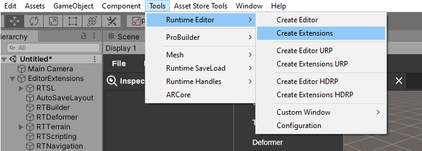
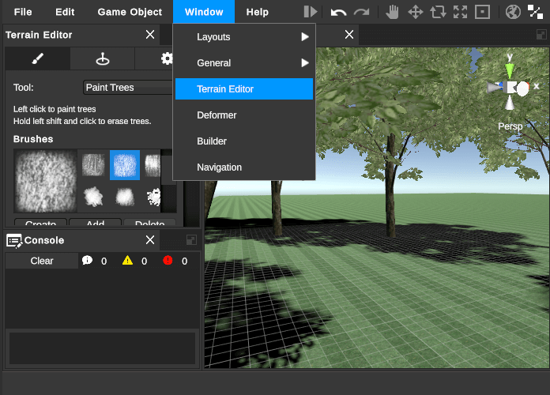
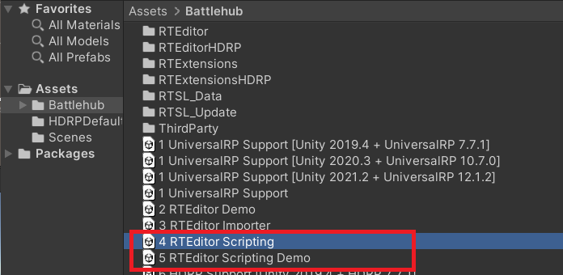

#Editor Extensions Docs ##Overview Editor Extensions are additional functionality that can be used optionally with the Runtime Editor. At the moment there are three built-in editor extensions:
- Runtime Builder - integration and user interface for Unity ProBuilder.
- Terrain Editor - user interface and additional functionality for Terrain editing
- Runtime Scripting - ability to create and compile MonoBehavior scripts at runtime

##Getting Started To start working with the editor extensions perform the following steps:
- Create Runtime Editor using Tools->Runtime Editor->Create Editor.
- Create Editor Extensions using Tools->Runtime Editor->Create Extensions. 
- Hit Play.
- Editor extensions should be available from the Window menu item.

##Editor Extensions
Editor extensions are located in Assets/Battlehub/RTExtensions folder. The /Content folder contains resources and prefabs, the /Runtime folder contains runtime scripts, and the /Editor folder contains scripts that run in the Unity editor. The prefab that initializes all extensions is called EditorExtensions and is located in the /RTExtensions/Content/Runtime folder.

##Runtime Builder
The Runtime Builder extension allows you to create and edit meshes, prototype, edit game object materials and texture UVs in Runtime Editor using Unity ProBuilder.
RTBuilder prefab can be found in /Battlehub/RTExtensions/Content/Runtime/RTBuilder.
Standalone RTBuilder demo scene can be found in: /Battlehub/RTEditorDemo/Content/Runtime/RTExtensions/RTBuilder

##Terrain Editor
The Terrain Editor extension allows you to add to Runtime Editor the possibility of editing Terrain objects.
RTTerrain prefab can be found in __/Battlehub/RTExtensions/Content/Runtime/RTTerrain folder.


##Runtime Scripting The Runtime Scripting extension allows you to create C# scripts at run-time using the Runtime Editor. The RTScripting prefab that initializes the extension can be found at /Battlehub/RTScripting/Content/Runtime.
Note
Unpack RTScripting and RTScripting Demo packages:

Note
Runtime Scripting Extension is only supported in a Standalone Windows build
Note
Runtime Scripting Extension use Roslyn.net compiler platform
After adding the RTScripting prefab to the scene, the Create->Script context menu item becomes available.

The script editor can be opened using the context menu or by double-clicking the script icon.

For programmatic access to the RTScripting extension you need to use the IRuntimeScriptManager interface. Here is how to add references to additional assemblies:
using Battlehub.RTCommon;
using Battlehub.RTEditor;
using Battlehub.RTScripting;
using UnityEngine.AI;
public class AddReferencesExample : EditorExtension
{
protected override void OnEditorExist()
{
base.OnEditorExist();
IRuntimeScriptManager scriptManager = IOC.Resolve<IRuntimeScriptManager>();
scriptManager.AddReference(typeof(NavMesh).Assembly.Location);
}
}
Example on how to create and compile script at runtime:
using Battlehub.RTCommon;
using Battlehub.RTScripting;
using Battlehub.RTSL.Interface;
using Battlehub.UIControls.MenuControl;
using System;
using System.Threading.Tasks;
using UnityEngine;
namespace Battlehub.RTEditor.Examples.Scene60
{
[MenuDefinition]
public class RuntimeScriptingExampleMenu : MonoBehaviour
{
private static string s_nl = Environment.NewLine;
private static string s_csTemplate =
"using System.Collections;" + s_nl +
"using System.Collections.Generic;" + s_nl +
"using UnityEngine;" + s_nl + s_nl +
"public class {0} : MonoBehaviour" + s_nl +
"{{" + s_nl +
" // Start is called before the first frame update" + s_nl +
" void Start()" + s_nl +
" {{" + s_nl +
" {1}" + s_nl +
" }}" + s_nl + s_nl +
" // Update is called once per frame" + s_nl +
" void Update()" + s_nl +
" {{" + s_nl +
" {2}" + s_nl +
" }}" + s_nl + s_nl +
" void OnRuntimeEditorOpened()" + s_nl +
" {{" + s_nl +
" Debug.Log(\"Editor Opened\");" + s_nl +
" }}" + s_nl + s_nl +
" void OnRuntimeEditorClosed()" + s_nl +
" {{" + s_nl +
" Debug.Log(\"Editor Closed\");" + s_nl +
" }}" + s_nl + s_nl +
" void RuntimeAwake()" + s_nl +
" {{" + s_nl +
" Debug.Log(\"Awake in play mode\");" + s_nl +
" }}" + s_nl + s_nl +
" void RuntimeStart()" + s_nl +
" {{" + s_nl +
" Debug.Log(\"Start in play mode\");" + s_nl +
" }}" + s_nl + s_nl +
" void OnRuntimeDestroy()" + s_nl +
" {{" + s_nl +
" Debug.Log(\"Destroy in play mode\");" + s_nl +
" }}" + s_nl + s_nl +
" void OnRuntimeActivate()" + s_nl +
" {{" + s_nl +
" Debug.Log(\"Game view activated\");" + s_nl +
" }}" + s_nl + s_nl +
" void OnRuntimeDeactivate()" + s_nl +
" {{" + s_nl +
" Debug.Log(\"Game view deactivated\");" + s_nl +
" }}" + s_nl + s_nl +
"}}";
[MenuCommand("Example/Create Script")]
public async void CreateScript()
{
IProjectAsync project = IOC.Resolve<IProjectAsync>();
IRuntimeScriptManager scriptManager = IOC.Resolve<IRuntimeScriptManager>();
string desiredTypeName = "MyHelloWorld";
ProjectItem assetItem =
await scriptManager.CreateScriptAsync(
project.State.RootFolder,
desiredTypeName);
RuntimeTextAsset cs = await scriptManager.LoadScriptAsync(assetItem);
string typeName = cs.name;
cs.Text =
string.Format(s_csTemplate, typeName, "Debug.Log(\"Hello World\");", " ", "");
await scriptManager.SaveScriptAsync(assetItem, cs);
await scriptManager.CompileAsync();
GameObject testGo = new GameObject("RT Scripting example");
testGo.AddComponent<ExposeToEditor>();
testGo.AddComponent(scriptManager.GetType(typeName));
await Task.Yield();
IRTE editor = IOC.Resolve<IRTE>();
editor.IsPlaying = true;
await Task.Yield();
editor.IsPlaying = false;
}
}
}